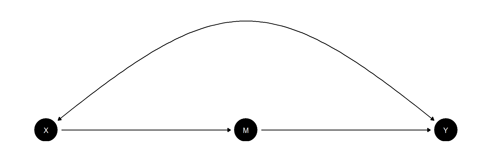

Group 4: Exercise 2-4
Course: Causal Inference and Experimental Design
Authors
Philipp Heyna
Nader Hotait
Daniel Kuhlen
Robert Stelzle
Yoanna Yankova
Published
January 16, 2024
Q 2.4
Task
Confounded Declare a design in which:
- The assignment of a treatment \(X\) depends in part on upon some other, binary, variable \(W\): in particular \(\Pr(X=1|W=0) = .2\) and \(\Pr(X=1|W=1) = .5\))
- The outcome \(Y\) depends on both \(X\) and \(W\): in particular \(Y = X*W + u\) where \(u\) is a random shock.
- Diagnose a design with three approaches to estimating the effect of \(X\) on \(Y\): (a) ignoring \(W\) (b) adding \(W\) as a linear control (c) including both \(W\) and an interaction between \(W\) and \(X\).
Discuss results. Do any of these return the right answer?
Hint: You can add three separate declare_estimator steps. They should have distinct labels. The trickiest part is to figure out how to extract the estimate in (c) because you will have both a main term and an interaction term for \(X\).
Solution
Q 3.4
Task
- A set of units have outcome \(Y^1_i\) at baseline.
- At endline they have potential outcomes \(Y^2_i(0)\) and \(Y^2_i(1)\)
- Write down the estimand for the average effect of treatment on endline outcomes
- Write down the estimand for the average effect of treatment on the change from baseline to endline for all units
Compare these and discuss.
Solution
Q 4.4
Task
Imagine a model that looks like this:
- Say that in truth ATE of \(X\) on \(M\) is .9 and that the ATE of \(M\) on \(Y\) is .9. Is the implied effect of 0.81 on \(X\) on \(Y\) identified?
- Say that in truth ATE of \(X\) on \(M\) is 1 and that the ATE of \(M\) on \(Y\) is 1. Is the implied effect of 1 on \(X\) on \(Y\) identified?
- Discuss
Hint: This question is asking about the front door criterion. Check whether the conditions apply for the front door criterion on hold. Note that an effect is not identified if the data pattern it produces is also consistent with a different effect. Is that the case here? Note you can generate and update models of this form with CausalQueries.